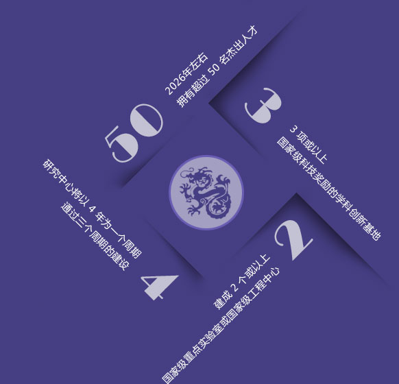
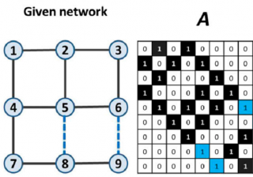
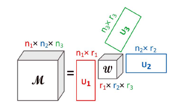

|
|
目前国内规模最大、架构最完整的大数据产学研一体化机构,由国内大数据领域领军专家周涛教授组建并担任中心主任,致力于构建大数据行业的“贝尔实验室” |
|
|
作为校级研究中心，拥有国家级人才12名，包括 2名长江学者，8名千人计划和1名万人计划获得者，中心成员曾获得1项国家自然科学二等奖，2项国家科技进步二等奖，11项省部级科技奖励一等奖。 |

|
|
定位为连接政府、企业、高校、研究院所、资本和创业型企业的纽带和中枢，致力建设成为在学科、学术、技术、产业、机制五方面均在国内具有引领地位的大型创新平台。 |
|  |
宗旨目标研究中心将建设形成在 学科、学术、技术、产业、机制 五方面均在国内具有引领地位的大型创新平台 搭建具有广泛普适性的存储、计算、分析和可视化平台 提升大数据技术的基础研究能力 提高学校在国际上的学术知名度 促进国家产业标准和产业政策的形成 |
组织结构

-

复杂网络链路可预测性
链路预测（Link Prediction）是网络科学中一个基础性的重要问题。该问题从已经观察到的网络结构入手，预测可能被观察漏掉的，或未来会出现的链路。精准的预测结果可以指导生物网络结构验证实验，大幅度节省实验成本和提高实验效率；可以进行在线社交网络的好友推荐；还可以挖掘出网络生长的内在机制。
-

多路数据分析中的贝叶斯非参方法
科学进步和经济发展的过程中总是伴随着海量的、动态的、结构复杂的数据的产生，人们称之为大数据。大数据是数字化生存时代的新型战略资源，是驱动创新的重要因素，正在改变人类的生产和生活方式。除了大数据的5V(Volume, Velocity, Variety, Veracity, Value)特性外，含有丰富数据的现实系统通常还具有：(1)高度复杂性，即数据由多个数据源或者多个方面组成；(2)数据存在显著稀疏性或不完整性。例如淘宝网会员超过3.7 亿人，在线商品超过8.8 亿件，每天交易数千万笔，产生约20TB数据；这里，<用户-商品-交易-时间>也构成一个多元稀疏关系。深刻理解这些多元关系中互动行为有助于把握隐藏在数据中的知识和掌握数据的变化规律。